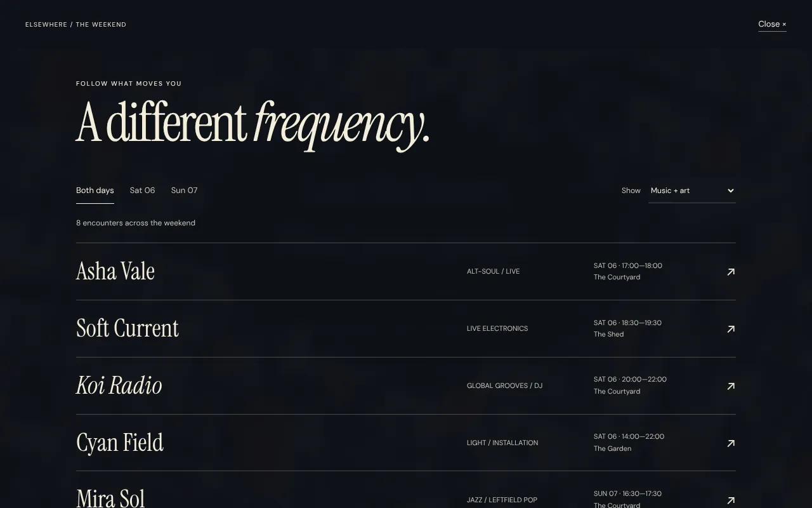
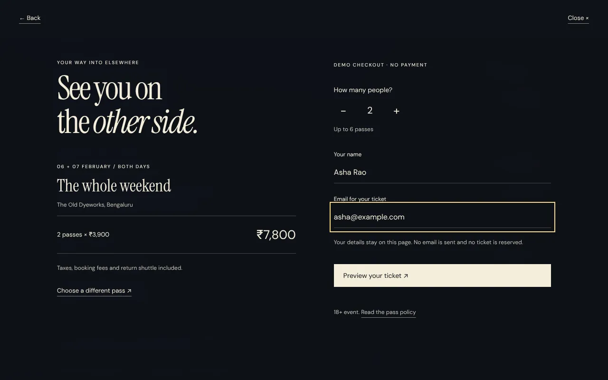

Case study · Concept · Festival website
Elsewhere: a festival you can get lost in. A booking flow you won’t.
A two-day independent music and arts festival in Bengaluru, imagined from scratch: the identity, the site, and the whole path from “I wish I was there” to a ticket. Self-initiated, fictional, and working end to end.
- What it is
- A self-initiated concept for a fictional festival: 06–07 February 2027 at the Old Dyeworks, Bengaluru
- The flows
- Programme filtered by day and type → artist detail → the right day pass → checkout with guest count, live total and a demo ticket
- What I did
- Art direction, UX, copy, frontend. Imagery generated from a reference-led art direction
- Status
- Demo. No tickets are sold and nothing is stored
- Link
- Open Elsewhere

The brief I set myself
A festival site has to sell a feeling, and then answer the questions that decide whether someone actually goes: who’s playing, when, how much, how do I get there, will I feel out of place on my own. Most festival sites do one or the other.
Before designing anything I read through festival-goers’ own discussions—seventeen threads across events in nine countries—about why they go and what they expect. Two things stood out. The motivations overlap: artists, friends, escape, discovery, value. And the practical expectations are concrete: cost, comfort, safety, logistics. Choice overload loses people, and so does a schedule that isn’t finished.
What the site does
- The opening. Three full-screen scenes over crossfading artwork. Sparse copy, one line about what the festival is, and a way in.
- The programme. Eight invented acts filtered by day and by type. Every artist opens to the right day pass, with travel, access and policies available when you want them.
- Inside the festival. Three spaces—courtyard, garden, shed—with the dates, hours and venue kept together, and a note for the curious.
- Passes. Saturday, Sunday or the weekend side by side. Prices include taxes, booking fees and the return shuttle.
- Checkout. One to six guests, a live total, name and email, then a demo ticket. Going back to the programme or the policy keeps everything you’ve entered.


Key decisions
Let the place set the mood.
Full-bleed city collages turn the page into a small unfamiliar world. The copy stays short and concrete—what the festival is, when, where—so the mood never costs clarity.
Help people find their version of the day.
Programme filters combine day and activity type. An artist detail leads straight to that day’s pass, so discovery and buying are one path instead of two.
Keep the booking decision clear.
Day and weekend passes sit side by side with everything included in the price, because the practical questions were the ones that came up most. The checkout keeps your choices if you step back to check something.
Directions I dropped
The first version had cream content blocks, images beside copy, a three-part navigation and a generated map of the grounds. It read like a template, so it went. The page became the artwork, with the copy placed inside it and the practical information on demand.
Later, the third screen was too abstract to be useful. It became an open place index—courtyard, garden, shed—with the dates and hours together, and the tickets moved into the natural scroll as the final section.
What I’d measure if it were live
- How many visitors open the programme, and how many of those open an artist.
- Artist detail → pass click-through, by day.
- Pass comparison → checkout starts, and where people leave the checkout.
- Weekend versus day-pass share, and the effect of the “save ₹900” line.
- How often the essentials and policy panels are read before booking.
Elsewhere is a fictional event created as a portfolio project. Artists, venue, dates, prices and policies are sample content. The imagery is generated from a reference-led art direction. The checkout is a demonstration: no payment, reservation or email is sent.